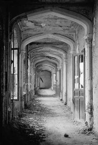

Abandoned places
There is something really weird about abandoned places. I personally find them very scary for several reasons. First is that they don’t necessarily have to be as abandoned as they might seem, and if someone lived there it would probably be weird enough person to kill me. The second, less childlish, is that it just seems scary to see a place that used to be full of people abandoned like this. This is also the fascinating thing about these places.
I found a few interesting sites, one with pictures (and some additional info) by a girl riding her motorbike through the Chernobyl area. One made by Polish guys is called opuszczone (click “gallery” at the bottom), it contains mostly Polish buildings, but there are photos from other places too. And I couldn’t possibly omit a great site that goes by the name abandoned places, made by a Belgian pilot who seems to spend quite a lot of free time on abandoned places; although the design is a bit, errrm, original… just click around a lot and you are bound to get to occasionally see all the great photos.
Is there any website about such places in Czechia (particularly Brno)? I couldn’t find one, and I was trying quite hard.
One thought on “Abandoned places”
tasuki 2006-10-13
Finally – a post with a picture!!! Didn’t make one since May… I’m very sorry, I know ya all kids luv pics.
Add your comment — How does this work?